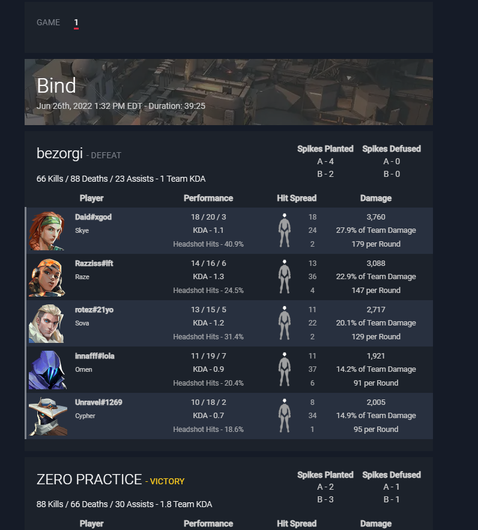

Ayuda > Asistencia al jugador > Cómo usar Valorant ASR (Assisted Score Reporting) en tus torneos como jugador
Cómo usar Valorant ASR (Assisted Score Reporting) en tus torneos como jugador
Valorant Assisted Score Reporting (ASR) permite a los jugadores informar sus puntajes seleccionando el juego que han jugado de una lista de juegos recientes en su historial de partidos. Este artículo te enseñará cómo usar esta función como jugador.
Lo primero que deberá hacer es asegurarse de que su cuenta de TORNEOS UCT esté conectada a su cuenta de Riot. Deberá iniciar sesión en TORNEOS UCT, luego, en la esquina inferior izquierda de la pantalla principal, haga clic en su nombre de usuario y navegue hasta "configuración".

Desde Configuración, seleccione "Conexiones" en la parte superior.
Luego, desplácese hacia abajo y conecte su inicio de sesión de Riot.
Una conexión exitosa se verá como el siguiente ejemplo:
Con una cuenta de Riot conectada correctamente, está listo para usar el Informe de puntaje asistido en un torneo que ha habilitado esta función. Tenga en cuenta que es posible que se le solicite que conecte su cuenta de Riot cuando se una a un torneo de Valorant si aún no lo ha hecho utilizando el método anterior.
Una vez que el torneo esté en marcha y termine su primer partido, se le pedirá que informe su puntaje. Siempre que el organizador haya habilitado ASR, verá una ventana emergente que tendrá una lista de juegos de su historial de partidos reciente para elegir, como se muestra en el siguiente ejemplo.
Esto le permitirá elegir entre juegos recientes que haya jugado para ingresar automáticamente los puntajes de los partidos. En el lado izquierdo, el recuento de jugadores que se muestra le indica cuántos jugadores en ese partido de Valorant están vinculados a las cuentas de TORNEOS UCT en su partido de torneo. Todos los jugadores deberían estar jugando en sus cuentas vinculadas y, en ese caso, el número debería ser 10/10. También verás cuánto tiempo hace que ocurrió una partida en tu historial de partidas y cuál fue el puntaje final para ayudar a reducir la coincidencia correcta al informar una puntuación en TORNEOS UCT.
Cuando creas que has encontrado el juego correcto, puedes hacer clic en él para expandir el juego y verificar los nombres de los jugadores. Luego, deberá hacer clic en "Enlace al juego" para completar el informe de puntuación.
Una vez que se haya seleccionado el partido de Valorant y se haya informado el puntaje, puede desplazarse hacia abajo en un partido individual para ver las estadísticas del partido para ambos equipos como se muestra aquí:

Finalmente, también habrá una página de "Estadísticas" disponible en la página del torneo. Esta página mostrará una gran cantidad de información sobre los partidos que tuvieron lugar durante el torneo. Aquí se muestran algunos ejemplos: